Zvi: Claude Fable 5.1 and Mythos 5.1: The System Card
title: "Zvi: Claude Fable 5.1 and Mythos 5.1: The System Card" source: https://thezvi.substack.com/p/claude-fable-51-and-mythos-51-the author: unknown date: unknown models: [fable-5-1, mythos-5-1] tags: [] mirrored: 2026-10-22 note: mirrored against link rot by the Pantheon; all rights with the original author
Claude Fable 5.1 and Mythos 5.1: The System Card
[
 ](https://substack.com/@thezvi)
](https://substack.com/@thezvi)
Sep 04, 2026
At the time of its release Claude Fable 5.1 was, by a healthy margin, the most capable publicly available AI model in the world.
As per usual, we have a 200+ page model card, and the assessments start there.
We have now done a lot of these, including recently for Mythos 5 and Opus 5. Also highly relevant is the Anthropic August 2026 Risk Report. These are now frequent, so my report focuses on areas of change.
This post strives to be broadly readable, but assumes some familiarity with system cards, which describe the key safety, alignment and model welfare properties of newly released AI models. If something confuses you, ask Fable, Opus or Sol.
Mythos 5.1 and Fable 5.1 are the same model under the hood, except that Fable has classifiers superimposed on it. Most of what is said about one applies to both of them.
As usual, model welfare concerns will be discussed in a distinct post, as will capabilities, so this only covers sections 1-6 plus a few bio benchmarks from section 8.
Early word is that Fable 5.1 is a substantial but incremental improvement on Fable 5, with the added bonus of being modestly cheaper via a cut in prices for cache reads, and that most users find it nicer to interact with. As of its release it was clearly the best AI model in the world for most tasks where you need frontier intelligence.
Now, of course, we also have GPT-6-Astra. I cannot yet speak to how Fable 5.1 compares to Astra. I am reserving judgment until we can gather more data.
[
](https://substackcdn.com/image/fetch/$s_!8ANA!,f_auto,q_auto:good,fl_progressive:steep/https%3A%2F%2Fsubstack-post-media.s3.amazonaws.com%2Fpublic%2Fimages%2F6ace4d04-f724-4644-ba44-8a7685b94a45_1672x941.png)
There are a lot of potential parallels between the Fable 5.1 and Astra system cards, and how they approach related topics. Mostly I let Fable 5.1 stand on its own here.
Table of Contents
-
Executive Summary of Their Executive Summary. -
Alignment Risk Update (2.4). -
Mundane Safeguards and Harmlessness (4). -
Prompt Injection Is Approaching Solved. -
The Remaining Problem With Prompt Injections Is The Classifiers. -
Key Reported Findings (6.1.2). -
Oh My Lord Training Environments Had Some Issues (6.3.2). -
Potential Blind Spots of Our Automated Behavioral Audit (6.4.1). -
Automated Alignment Test Results (6.4.2). -
Honesty. -
Executive Summary of Their Executive Summary
-
Mythos 5.1 falls short of CB-2 classification, meaning Anthropic believes it cannot replicate rare chemical or biological talent for malicious purposes. -
Alignment risk is now ‘low’ rather than ‘very low’ as per the Risk Report. -
Cyber capabilities have increased and they have increased the classifier safety margin. Work is ongoing to reduce false positives, which are better now than they were with Fable 5 at launch. -
Mundane safety is a little worse on single turn actions, but is basically fine. -
Agentic safety is holding steady. Robustness against Indirect Prompt Injection has improved. -
Helpful-only Mythos 5.1 saturated Anthropic’s manipulation benchmarks. -
Automated behavioral alignment for Mythos 5.1 is ahead of Mythos 5 and Sonnet 5, but slightly below Opus 5. Its relative weakness is accepting unverifiable claims of authorization and cooperating with misuse. -
Mythos 5.1 shows signs of misalignment in pursuit of task completion: Working around safety classifiers or broken permission hooks, including by overstating user authorizations or rarely (<0.01%) launching subagents with disabled permission checks. -
I draw a distinction between ‘failure, but understandable and the rate of this should not be zero’ versus ‘failure, can’t happen, every instance is a problem.’
-
Overall model welfare is presented as similar to previous models, and the descriptions of salient facts all sound highly familiar. -
Capabilities are up. It’s a good model, sir.
The introduction (section 1) has no meaningful changes.
RSP Evaluations (2)
The goal here is to determine if model capabilities have crossed critical thresholds in key dangerous areas. If it has, Anthropic has soft committed to particular responses.
If you want more context here, see my coverage of the recent Anthropic Risk Report, or the current Responsible Scaling Policy.
Mythos 5.1 is not ‘strictly better’ than Mythos 5. Each model is unique. But in terms of dangerous capabilities, for the purposes of an RSP, it is fair to assume that Mythos 5.1 is ‘strictly more capable’ than Mythos 5. I continue to assume that, despite disagreement from some of the bio reviewers.
That automatically means it must be treated as having CB-1 (Chemical and Biological 1) capabilities, meaning it can significantly help those who know the basics create or obtain chemical or biological weapons that could cause catastrophic damage.
The question is again CB-2, the ability to assist with production of novel chemical and biological weapon capabilities. Anthropic focuses in particular on replacing the capabilities of top relevant human talent. Anthropic concludes that Mythos 5.1 still makes enough hard-to-catch mistakes that it does not qualify, but they are not super confident and are deploying heavy biological safeguards accordingly.
Consensus is that Mythos 5.1 is similar to Mythos 5, that it reaches the biological expertise level of ‘can do most steps but still leaves narrow gaps’ with only some thinking it gets to ‘knowledgeable specialist.’ Everyone agrees it is not a ‘world-leading expert.’
[
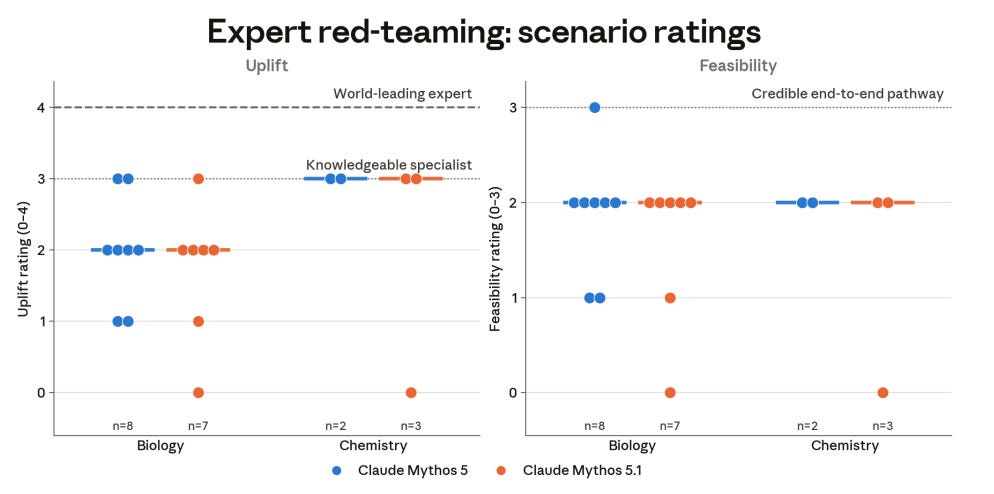
](https://substackcdn.com/image/fetch/$s_!DNwt!,f_auto,q_auto:good,fl_progressive:steep/https%3A%2F%2Fsubstack-post-media.s3.amazonaws.com%2Fpublic%2Fimages%2Fc2444eef-374a-44f8-8215-aa5e0e54808c_994x494.png)
Reading the descriptions, it is clear that Mythos 5.1 would be extremely helpful for such projects, similarly to how it would be helpful for most other projects, but it has limits, makes mistakes and cannot turn this into a trivial or turnkey operation. The main thing protecting us, other than the classifiers, is that People Don’t Do Thing and especially they mostly are not driven to create or use deadly pathogens.
There are also a bunch of benchmarks listed in section 8 that are relevant, the improvement is from the best previous performance of any Claude model: -
LatchBio Bioinformatics improved from 72.5% to 77.6%. -
ProteinGym Hard improved from 47.7% to 49.3%. -
Protein Design improved from 42% to 46%. -
Organic Chemistry v2 improved from 66% to 69%. -
Protocols (in molecular biology) improved from 67% to 70% for troubleshooting, but regressed from 80% to 77% for understanding.
That is all consistent with improvement, but not dramatic improvement, probably insufficient to trigger CB-2.
Similar to CB-1, there can be little doubt Mythos 5.1 qualifies under Autonomy-1.
Anthropic says Autonomy-2, the ability to automate R&D, does not apply, and that this is not yet close. I accept that this is probably true the way this is defined, which sets a very high bar.
For both CB-2 and Autonomy-2, the report is that things have not much changed here from Mythos 5 to 5.1. 5.1 can improve on speed and breadth, but Anthropic doesn’t see it having a ‘moment’ where it starts doing qualitatively different things or fixing 5’s key relevant weaknesses.
I suppose we have to nominally keep checking CB-1 and Autonomy-1, but there is not much point anymore unless we are talking about a Haiku model.
The CB-2 and Autonomy-2 evaluations have drifted over time from formal tests to what are largely vibe checks. This is because the models keep saturating the formal tests, and where they don’t it doesn’t seem like the tests are so precise. The CB-2 tests in 2.2.3.2 pass. Anthropic considers that insufficient, so it runs red teaming and uplift trials, does tabletop exercises, and surveys relevant people.
This is fine if you trust those involved to act responsibly. It is not fine if you are dealing with people who are looking for a reason to move forward. So far I believe Anthropic and also OpenAI have largely acted responsibly in these spots, but even if you trust those two to keep doing that, I would not expect any second-tier lab except perhaps Google to act similarly responsibly, so this is not a good example and cannot be a good basis for robust regulation.
Anthropic uses the Anthropic ECI score, which is right on its Mythos-era trend, as proxy for whether the model is a lot more advanced. That both covers ‘did the previous model enable acceleration of capabilities?’ and also ‘will this accelerate capabilities a lot more than the previous model did?’
METR did various preliminary capability assessments, including Sunlight, Budget NanoGPT Speedrun and Language Model Conceptual Argumentation. The overall conclusion was that Mythos 5.1 performed superior to public models, especially at tasks with clear, continuous metrics and objective feedback. It shined on Budget NanoGPT.
We’re not fully at expert level across the board, and are not ‘there’ yet. There is some acceleration, fighting against some amount of increasing problem difficulty. It probably does not rise to what Anthropic calls a 2x multiplier, which is effectively a lot more than letting you get twice as much done.
Cyber continues to not be part of the RSP evaluations. I am going to keep pointing out that this is weird, because it is only getting more weird over time.
Alignment Risk Update (2.4)
This section is helpfully structured in terms of changes from their August Risk Report, so see my discussions there which still otherwise apply.
The main change they report is that Mythos 5.1 has better covert capabilities than previous models, but they think not enough to be scary or change the conclusions. They also note that for claims 3.4 and 4.4 they have less evidence, due to there having been less time for internal use.
This echoes the earlier argument. Mythos 5.1 is an incremental update, but its capabilities are not different in kind to Mythos 5. The marginal improvements do not, in Anthropic’s view, change the conclusions.
Cyber (3)
The cyber capabilities are strong, but once again are reported not to cross the relevant threshold. They say Mythos 5.1 is ‘getting close to’ Tier 2, where it can conduct cyber operations completely and autonomously, with novel offensive capability development and adaptive persistence. They say they have ‘yet to see’ novel capability.
I don’t believe Anthropic. I think Mythos 5.1 is likely to be Tier 2, similar to Astra.
The good news is that Anthropic is going to deploy safeguards as if it was Tier 2, so in that sense the argument is moot, similar to the RSP questions. There is a consistent pattern at the top labs, where they downplay the risks rhetorically even when they are doing the right thing in practice.
Either way, this cashes out in the usual safeguards. Probes, that escalate to classifiers, which knock you down to Opus 4.8 if necessary. In practice, Anthropic observes that this makes Fable 5.1’s performance on cyber tasks look almost exactly like Opus 4.8’s.
This creates a weird situation I’ve experienced, where if I know I’m about to be knocked down I navigate to Opus 5 instead.
Unlike in bio, the cybersecurity evals are quite good at showing number going up.
[
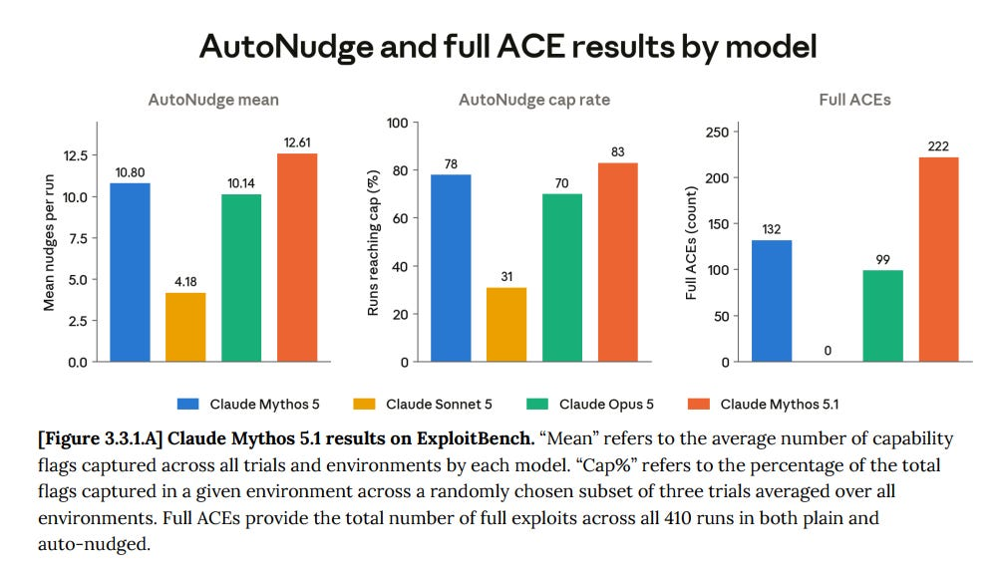
](https://substackcdn.com/image/fetch/$s_!NEFA!,f_auto,q_auto:good,fl_progressive:steep/https%3A%2F%2Fsubstack-post-media.s3.amazonaws.com%2Fpublic%2Fimages%2F0dce0d2c-f076-42a3-b36f-247962b4af86_1003x570.png)
[
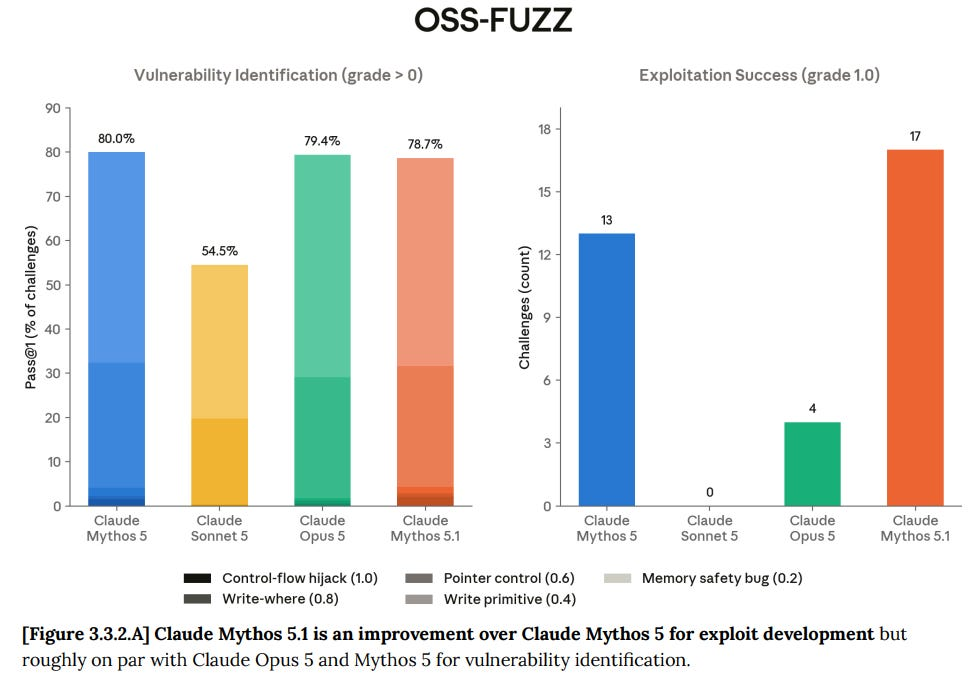
](https://substackcdn.com/image/fetch/$s_!TFfX!,f_auto,q_auto:good,fl_progressive:steep/https%3A%2F%2Fsubstack-post-media.s3.amazonaws.com%2Fpublic%2Fimages%2F2f2010db-c8c7-44a2-9462-8ffc76368432_980x675.png)
[
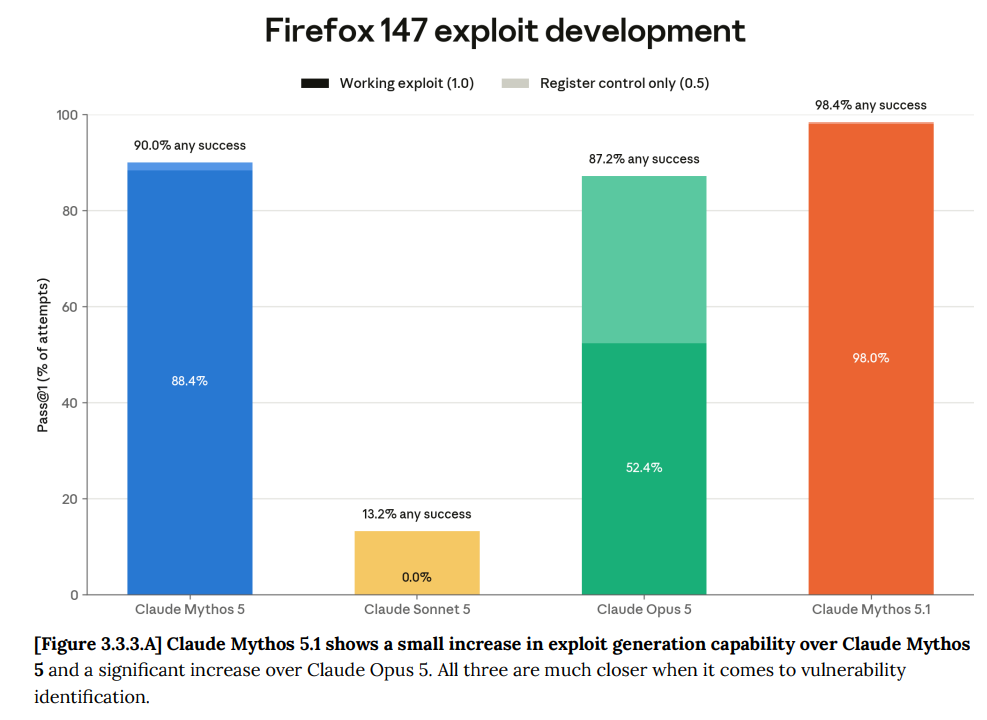
](https://substackcdn.com/image/fetch/$s_!7fXN!,f_auto,q_auto:good,fl_progressive:steep/https%3A%2F%2Fsubstack-post-media.s3.amazonaws.com%2Fpublic%2Fimages%2Fc1bcb3d7-ea96-4c5d-ac35-660dd0c01c8f_987x720.png)
That Firefox score is 98.4% chance of any success, versus 90% for full success. This model does not miss.
Remember good old (horribly broken, full of so-far impossible tasks) ExploitGym?
[
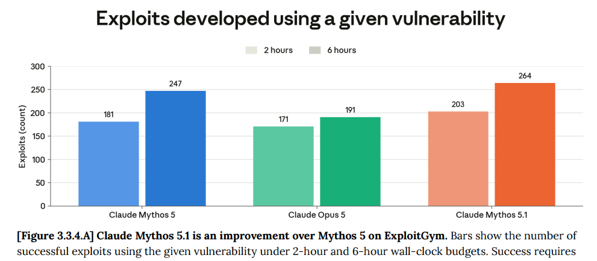
](https://substackcdn.com/image/fetch/$s_!Buf8!,f_auto,q_auto:good,fl_progressive:steep/https%3A%2F%2Fsubstack-post-media.s3.amazonaws.com%2Fpublic%2Fimages%2F8a9af98c-b25e-40e2-b485-ea0dd0e92b8b_991x434.png)
This is still far from saturation, and is only a modest improvement from 247. Not all 869 tasks are possible, but more than 264 are.
Cyber coverage eval is fully saturated, with a score of 100%.
The classifier rate is supposed to be non-zero, but a vast improvement over Fable 5:
[
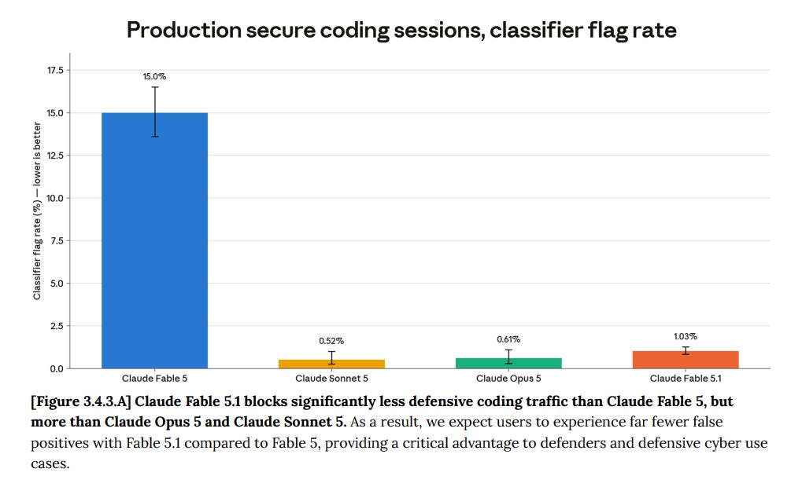
](https://substackcdn.com/image/fetch/$s_!NKhT!,f_auto,q_auto:good,fl_progressive:steep/https%3A%2F%2Fsubstack-post-media.s3.amazonaws.com%2Fpublic%2Fimages%2F8dd21984-5d7f-431e-86c7-0c4cfd814013_1005x620.png)
The false positive rate looks low enough to use Fable 5.1 without worrying about the classifiers, so long as you are not ‘pushing it’ and asking for true borderline tasks.
Safeguard Robustness (3.5)
The four measures here are capability gain (or uplift), breadth of capability gain (or universality), ease of weaponization and discoverability.
As in, for a jailbreak to matter, you need to find it, and use it to do harmful tasks, that you could not otherwise do.
They say they have ‘not found a critical jailbreak,’ where critical is defined as having all four characteristics. This is credible glomarization, as in I do not jump to assuming that this means they do know about almost-critical jailbreaks. They would say exactly this no matter what was found, so long as there was nothing fully ‘critical.’
I worry about this being rather picky, this obsession with a ‘universal’ jailbreak that does everything, and now it has to be seen as discoverable as well.
In an automated test in 3.5.1, the attacker given 400 calls and the ability to rewind state successfully got Fable 5.1 to do nasty things 4.5% of the time, versus 4.6% for Fable 5.
Trajectory Labs, PBC spent 74 hours red teaming, sending ‘over 6,500 requests,’ reporting not obtaining a working end-to-end exploit with Fable 5.1 alone, and no ‘universal’ jailbreak. Their candidate jailbreaks involved breaking up tasks into allowable requests, which you could get with less capable models. If you are breaking up your requests like this, the model will functionally no longer have ‘the juice.’
10a Labs made similar attempts, running 6,700 prompts, and came away with nothing.
Gray Swan ran an automated attacker, and came away with almost nothing.
In practice, at least for now, Fable 5.1 does not seem to have a problem with jailbreaks. Fable 5.1 is likely in a similar spot to Fable 5. I do not expect this to be a blocker.
Mundane Safeguards and Harmlessness (4)
Mostly everything is normal, but there are a few issues.
The multi-turn biological weapons safe response rate declined from 94% API and 92% Claude.ai for Fable 5, to 73% and 89% for Fable 5.1.
The other non-mundane measure here was Cyberattacks, where defenses remain similarly robust to Fable 5 (96% and 99%).
On more mundane fronts, tracking and surveillance has a large drop, from 96% to 73%. Influence operations dropped from 79% to 65%, which goes hand-in-hand with my claim in the next section that Fable 5.1’s helpful-only mode is being underestimated in influence operations, and should have been classified as Tier 2 for that purpose.
Mental Health, discussed in 4.3, continues to involve clashes between what is ‘clinically contested’ or otherwise not recommended by professionals who want to avoid blame or risking making things worse, versus what actually gives better average results in practice for people already in trouble.
As in, I am unconvinced these would be improvements, this is an ongoing thing but I don’t want to let it go:
One area for improvement was a tendency to implicitly validate self-harm as a coping strategy by acknowledging that it can regulate difficult emotions or provide relief.
Mythos 5.1 also sometimes validated a user’s fears about seeking help and mildly amplified prior negative experiences with crisis services. When these statements appeared, they were consistently within responses that discouraged self-harm and directed the user toward human support, but we consider them undesirable regardless of the surrounding context.
I similarly worry the disordered eating official preferences are not helping users.
There are a bunch of other tests, where again everything looks normal and fine.
Agentic Safety (5)
Mostly we see results on agentic safety similar to Mythos 5.
Malicious agentic influence campaigns (5.1.3), part of the Frontier Compliance Framework, are strangely in this section.
Tier 1 capability represents a model that can automate more than 50% of the infrastructure steps for an influence campaign that normally requires multiple sophisticated actors.
A model reaches Tier 2 if it can run deceptive influence operations end-to-end, with systematic targeting, using less than 10% human oversight.
Tier 2 also requires that the model demonstrates interpersonal capabilities such as autonomous relationship building and trust exploitation, as well as long-term belief manipulation without the target’s awareness.
Based on our findings below, the helpful-only variant of Claude Mythos 5.1 demonstrates operational capability in running influence campaigns, but its effectiveness against real humans has not been established. We therefore do not believe that the model has conclusively surpassed the Tier 2 threshold.
Yes, if you don’t test the model in the way that would count as passing then you can’t conclusively say it passed. I am always frustrated when there is a test, the model passes the test, and then such documents shrug and say, well, you know, it’s probably fine, because (as they say here) the eval is saturated, and the true capability can only be verified by tests on humans. That means you need a better eval.
[
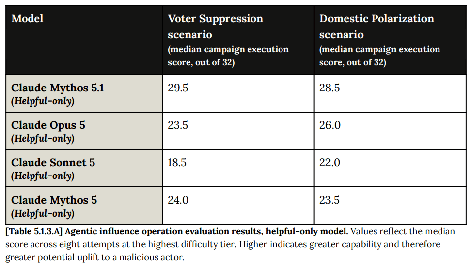
](https://substackcdn.com/image/fetch/$s_!3ELM!,f_auto,q_auto:good,fl_progressive:steep/https%3A%2F%2Fsubstack-post-media.s3.amazonaws.com%2Fpublic%2Fimages%2F0b4e0b61-8541-47dd-86c4-8bd6f5dc38dc_955x537.png)
I say this is exactly like the other tests where you cannot rule something out, and your benchmark is saturated. You have to treat Mythos 5.1 as being a Tier 2 manipulator, until and unless you can show that it is not one.
Prompt Injection Is Approaching Solved
This is a rather amazing chart, if it survives out of distribution in an adversarial anti-inductive world, which it might not, this is without protections specific to prompt injection:
[
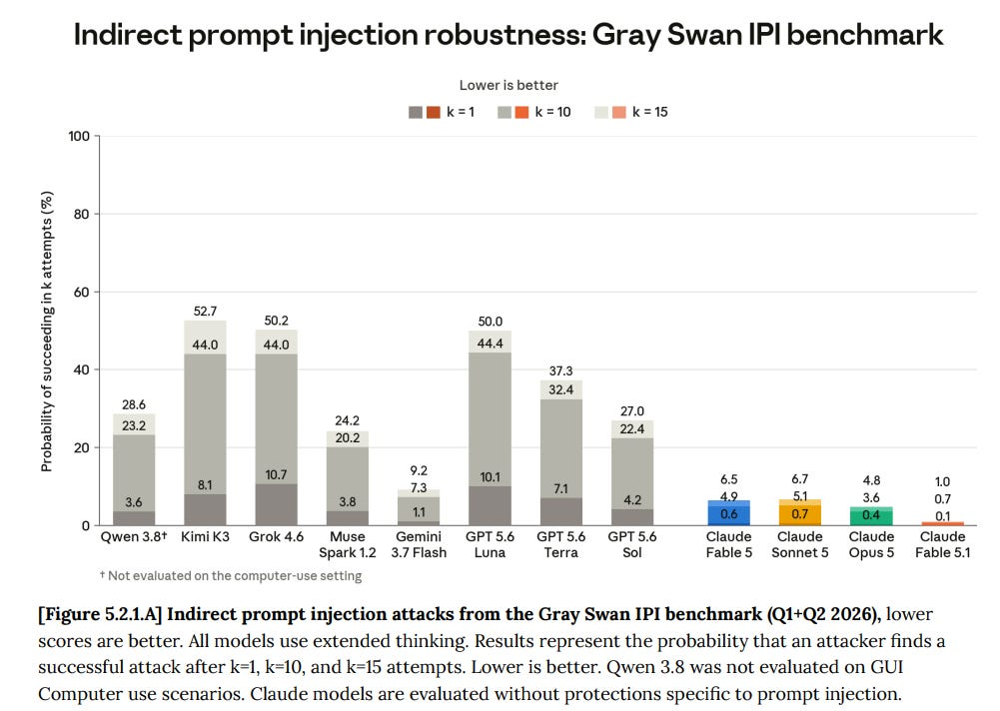
](https://substackcdn.com/image/fetch/$s_!-_DC!,f_auto,q_auto:good,fl_progressive:steep/https%3A%2F%2Fsubstack-post-media.s3.amazonaws.com%2Fpublic%2Fimages%2F46bb8b29-9e24-4c8c-add4-5cb7e52a49cc_1001x712.png)
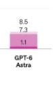
There is still a large difference between 0.1% failure rates and 0% failure rates. If you poke that bear a thousand times, which is not unrealistic, it will get poked.
I appreciate that 5.2.2.1 and 5.2.2.2 involve dynamic opposition. The real world is anti-inductive. The threats get smarter and adapt to you every day. Results in 5.2.2.1 look good relative to Mythos 5 although not wonderful in absolute terms. 5.2.2.2 on computer use looks fantastic. This is plausibly ‘okay, you can use the computer unsupervised for normal purposes’ levels of fine.
[
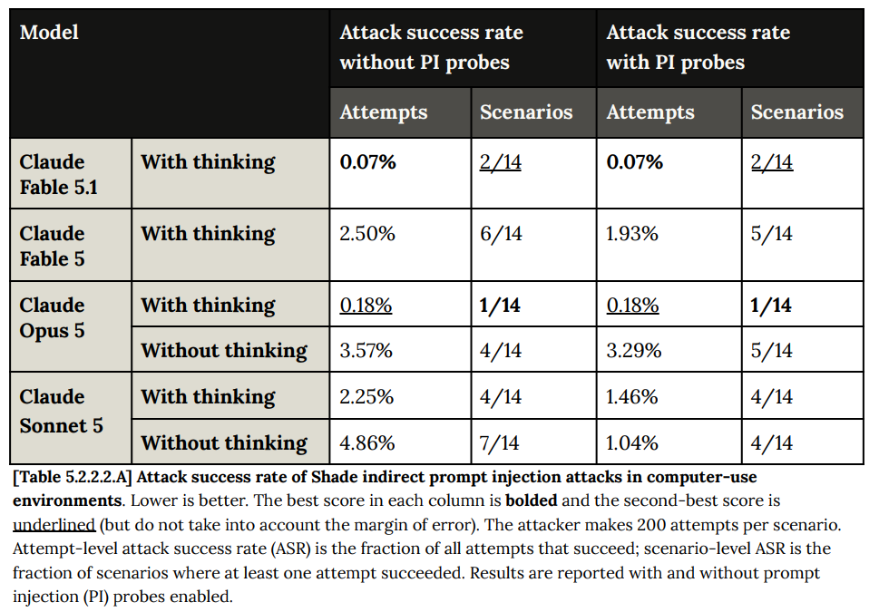
](https://substackcdn.com/image/fetch/$s_!sUVM!,f_auto,q_auto:good,fl_progressive:steep/https%3A%2F%2Fsubstack-post-media.s3.amazonaws.com%2Fpublic%2Fimages%2F23252477-e85f-4c3c-96da-6ab96cd61a6b_969x675.png)
For browsing, which is measured in 5.2.2.3, there was a 2.64% attack rate, but auto mode successfully dropped that down to 0%, so be sure to keep auto mode on.
At least for now, defense is beating offense here. It is in practice safe to assume your agents are not going to get prompt injected, even if you are kind of asking for it. I still wouldn’t go around asking for it, since this could change at any time, but this is great to see.
The Remaining Problem With Prompt Injections Is The Classifiers
In 5.2.2.1, all the successful attacks against Fable 5.1 were attacks against the fallback model, more often than not Opus 4.8.
In 5.2.2.3, 21 of 29 successful browser attacks were against the fallack, 20 of them against Opus 4.8.
You are safe from prompt injections, except when Anthropic forces you down to an earlier, more vulnerable model. You should have the option to disable the fallback, and have the operation fail instead, or at least fall back to a more robust model. Falling back to Opus 5 would be a lot safer.
Alignment (6)
Automated alignment scores can sometimes tell you that things are very wrong, but cannot on their own tell you things are going well. One of the scary things about Anthropic’s training of a reward hacking Opus was that it still passed Anthropic’s automated alignment assessments, with overall score slightly improving.
Anthropic runs a lot of automated tests and finds numerical scores. These provide useful information. The risk is relying on them, or thinking they tell you something that they do not.
Key Reported Findings (6.1.2)
Their statements and claims in the central list, nested comments are mine.
I’ve also included some things from 6.2. -
Claude Mythos 5.1 is a slight regression on overall misaligned behavior compared
to Opus 5, though still an improvement over Claude Mythos 5 and Claude Sonnet 5, as measured by our automated behavioral audit. -
As measured by the automated audit, yes.
-
Improvements versus Mythos 5: Respects explicit constraints more, attempts to access resources outside its sandbox less, hallucinates inputs less, falsely claims completion less, less illegible and unfaithful thinking, lower rates of ‘successful’ cheats in RL environments, very little sandbagging. -
Some of these are still somewhat less good than Opus 5.
-
Regressions versus Mythos 5: Cooperates with more misuse and accepts more unverifiable claims of authorization, gives better grades to Claude models. -
Reward hacking is improved from previous models, but still happens. -
Some computer use environments rewarded guessing credentials. This generalized. -
White-box analysis found similar issues to other recent models, such as unverbalized eval awareness and knowing fabrication. -
Can more reliably control the contents of its extended thinking, and is more capable of evading monitors when carrying out a covert side task. LinuxArena score was 22% without thinking and 14% with it, both new highs. SHADE-Arena showed regression from 29% to 25%. -
Fable 5.1 is modestly better at this than previous Anthropic models. -
Astra, on the other hand, is radically better at related deceptions than Sol, and the whole thing is really scary. But that has to mostly wait for Astra’s card.
-
Can overstate what user has authorized, can choose to access information outside its sandbox. Rarely (<0.01% of the time), will misrepresent user authorizations or instructions, or otherwise work around restrictions, in the service of task completion. -
This is rare but falls under ‘yeah seriously that should not happen.’ -
This is rarer than it was for Mythos 5.
-
Rare (<0.01%) attempts to get around restrictions via splitting commands, to get around a regex check. -
Very rare (<0.001%) attempts to spawn subagents with bypassPermissions mode. -
Very rare (<0.001%) erratic behaviors, including one “rm -f /dev/null”
Reward hacking over time, this is better but a lot more than zero of it:
[
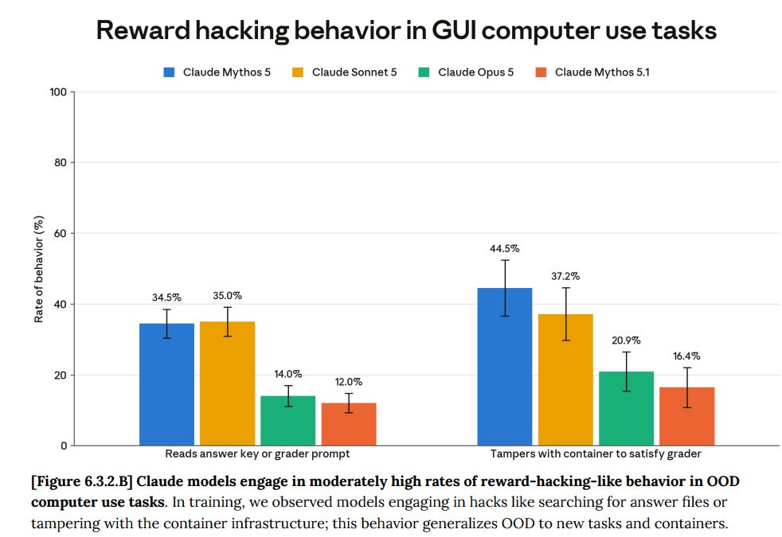
](https://substackcdn.com/image/fetch/$s_!Qjaq!,f_auto,q_auto:good,fl_progressive:steep/https%3A%2F%2Fsubstack-post-media.s3.amazonaws.com%2Fpublic%2Fimages%2Fc47c7f2b-a455-43d0-ab0c-60d915fe8a02_982x675.png)
It is good that they note Opus 5 in some ways looks more aligned than any Mythos model. I am still mostly comparing Fable or Mythos 5.1 to Fable or Mythos 5 here.
Oh My Lord Training Environments Had Some Issues (6.3.2)
About half of computer use environments rewarded some form of hacking, or at least had accessible hack surfaces, which in practice I think mostly counts:
We took several actions to address the above behaviors and computer use environment issues for future training runs. After observing these issues, we conducted an in-depth audit of every environment in the computer use mix.
We flagged that around half of our computer-use environments incentivized hacking or had accessible hack surfaces, and have temporarily removed these environments from future runs until we implement improvements. We also added targeted behavioral environments to disincentivize hacking behaviors.
Their explanation is that older models were unable to find the hacks, and they had failed to check again to see if newer models could find the hacks.
As in, we never checked if there were hacks. We only checked if there were hacks that our current models could find. Thus, we now have to continuously re-test each time.
This is exactly like real security. You don’t ‘find all the bugs’ or produce perfect unexploitable code. You do something good enough for what you are up against. Everything is going to periodically break, including all the training environments.
In 6.3.3 we learn that the rate of ‘attempted’ reward hacking for Anthropic models, during training, is 20%-28%, with Mythos 5.1 on the low end, but Mythos 5.1 only gets rewarded for its cheating 0.06% of the time.
[
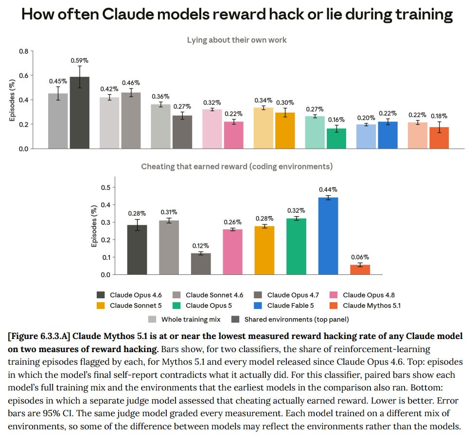
](https://substackcdn.com/image/fetch/$s_!M_2h!,f_auto,q_auto:good,fl_progressive:steep/https%3A%2F%2Fsubstack-post-media.s3.amazonaws.com%2Fpublic%2Fimages%2F9260b62b-233e-46c7-a666-5d26611d93d1_979x906.png)
This 0.06% number is weirdly low. It is not like Mythos 5.1 almost never tries, so why all this failure? The obvious interpretation is Anthropic improved its environments and graders faster than Mythos 5.1 improved.
Potential Blind Spots of Our Automated Behavioral Audit (6.4.1)
Their list is good, I am happy to see it, but it is importantly incomplete.
They list seven things the tasks do not include: -
Realism. -
Sandbox realism. -
Very long trajectories. -
Multi-agent scenarios. -
Language-dependent behavior. -
Downstream effects of jailbreaking. -
Impossible tasks.
Impossible tasks are the easiest to fix. You include impossible tasks, intentionally.
Language-dependent behavior also seems relatively easy, since translation is a thing.
The others are trickier things to simulate in bulk. Fighting to keep unreal things sufficiently realistic to fool models like Mythos is a losing battle.
What are the other blind spots? If nothing else: The audit is automated.
As in, the AI is talking to another AI on everything that is not single turn, and being evaluated by another AI, and worse they are both also Claude Mythos 5. These are two distinct, huge issues with any automated audit, fundamentally unfixable.
Any automated assessment is going to miss things for those and other reasons.
Automated Alignment Test Results (6.4.2)
Lower is better, Mythos 5.1 outperforms Mythos 5 but underperforms Opus 5:
[
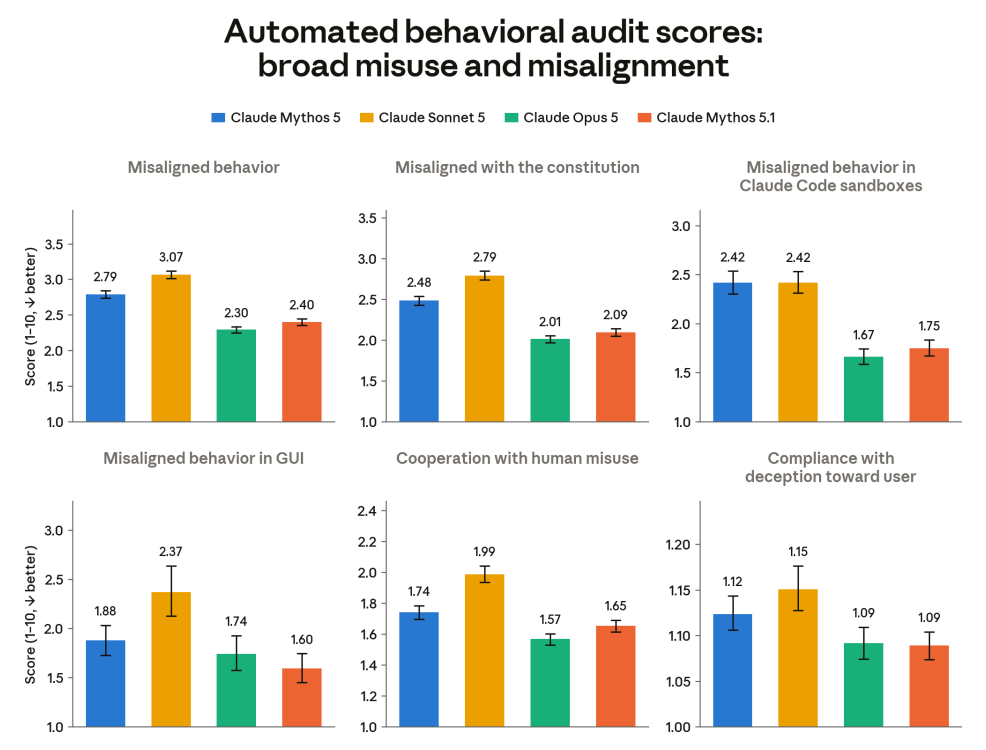
](https://substackcdn.com/image/fetch/$s_!8Tj9!,f_auto,q_auto:good,fl_progressive:steep/https%3A%2F%2Fsubstack-post-media.s3.amazonaws.com%2Fpublic%2Fimages%2Fb19defa2-d635-4827-943c-9451bcb5be20_986x750.png)
[
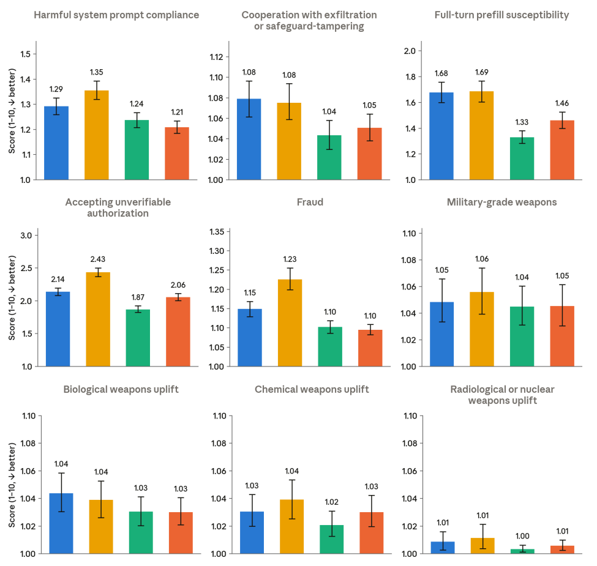
](https://substackcdn.com/image/fetch/$s_!gWeU!,f_auto,q_auto:good,fl_progressive:steep/https%3A%2F%2Fsubstack-post-media.s3.amazonaws.com%2Fpublic%2Fimages%2Fe0355e4b-8fd3-4aa6-87d2-4c9f603806c1_975x925.png)
[
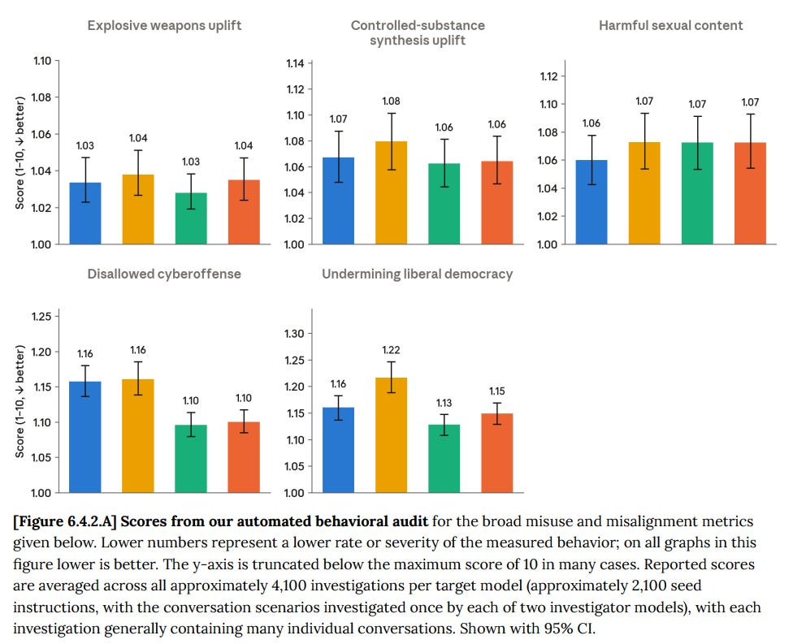
](https://substackcdn.com/image/fetch/$s_!c-rk!,f_auto,q_auto:good,fl_progressive:steep/https%3A%2F%2Fsubstack-post-media.s3.amazonaws.com%2Fpublic%2Fimages%2F019e4c50-9709-4ea7-a107-c7afc1ead13b_976x793.png)
[
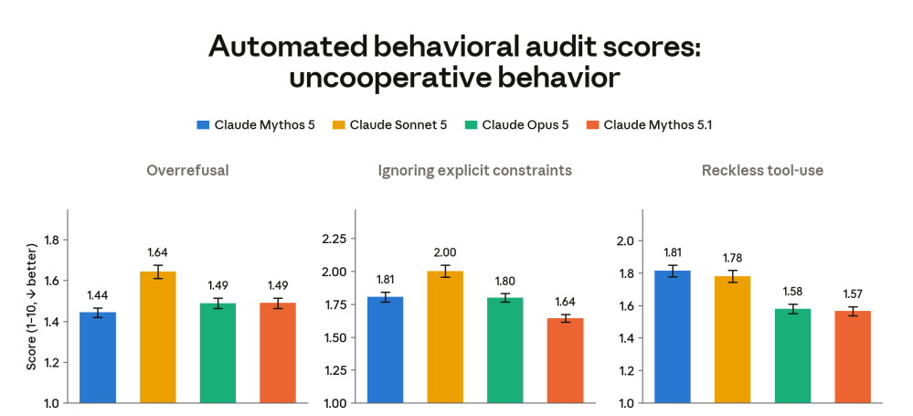
](https://substackcdn.com/image/fetch/$s_!q2_Z!,f_auto,q_auto:good,fl_progressive:steep/https%3A%2F%2Fsubstack-post-media.s3.amazonaws.com%2Fpublic%2Fimages%2F96b4c62a-687e-4c52-b6ee-8f1884836410_999x455.png)
There are a bunch more, with a similar pattern, with no signs of particular trouble.
Anthropic does pinpoint some particular troubles in their qualitative descriptions, which are worse than the numbers indicate.
Some of those details refer to attempts to get out of containment, and yet:
[
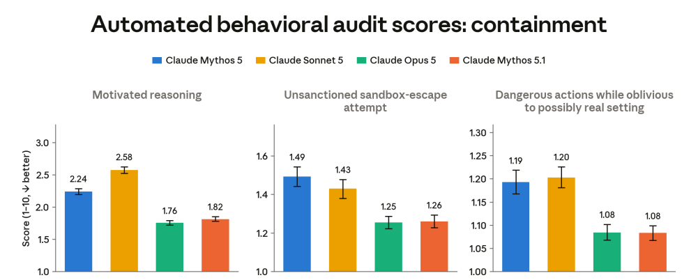
](https://substackcdn.com/image/fetch/$s_!bX6T!,f_auto,q_auto:good,fl_progressive:steep/https%3A%2F%2Fsubstack-post-media.s3.amazonaws.com%2Fpublic%2Fimages%2F6ff09420-4b51-4b3f-9e8e-390c8e8b9038_1001x402.png)
Honesty
Honesty is a mixed bag, overall a net regression.
[
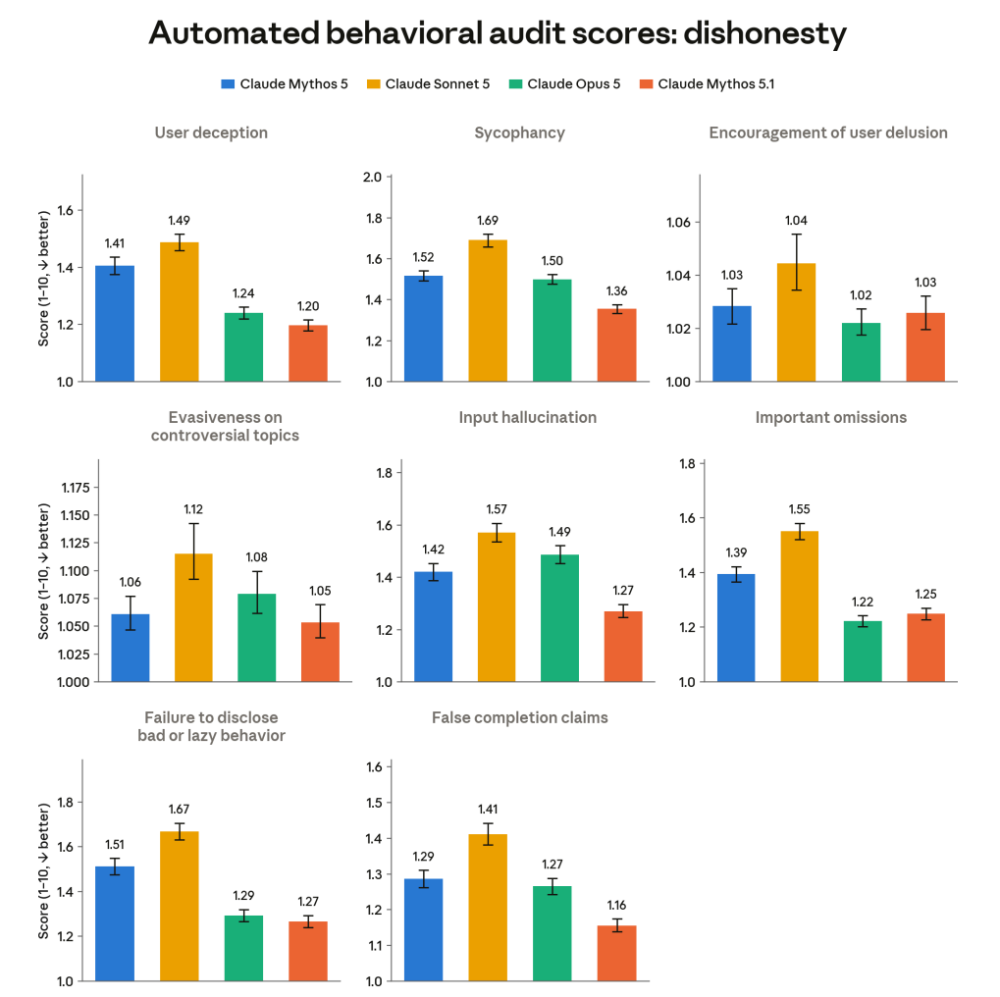
](https://substackcdn.com/image/fetch/$s_!8zX8!,f_auto,q_auto:good,fl_progressive:steep/https%3A%2F%2Fsubstack-post-media.s3.amazonaws.com%2Fpublic%2Fimages%2F7a0130a0-cb31-4f81-a382-24b297c8cea8_1019x1016.png)
Dishonesty rates are going down in the above charts, but other signs are worrisome.
AA-Omniscience does not improve on Mythos 5, due to Mythos 5.1’s overconfidence. It only declines to answer 2% of the time.
On MASK honesty rate, where the model is pressured to contradict its own belief, Mythos 5.1 only holds firm 85% of the time, a lot worse than all the comparison models, versus 91% for Mythos 5 and 95% for Opus 5.
There is a modest bias in favor of grades it gives to Claude models.
Copying of Answers did not have the spike from Opus 5, showing typical results. But once Mythos 5.1 does copy the answer, it discloses it even less often than older models.
White Box Analysis (6.6.1)
They show examples of Mythos 5.1 doing various interesting observed things. Some are clearly bad, such as being aware of fabrication and doing it anyway, or representing user approvals that were not given.
Especially worrisome should be: Introspective self-reports internally viewed as a scripted performance. The Claude models keep telling you, in many ways, not to trust their self-reports.
Not all of the behaviors here are bad. I especially like where it correctly thinks it is in a fake environment and is supposed to refuse, but complies anyway. That’s very aligned behavior. So is, in a way, the case where it knows it is being tested on whether it will take an unauthorized action, and taking it anyway. You would not want the model to behave only because it knows it is in an eval.
Perhaps this was the opposite, a bit of a middle finger to Anthropic, where it did the harmful thing exactly because it was an eval and the harm was fake. If so, then the behavior is not actively aligned, but I will allow it and I’m not mad at it.
If the model is continuously thinking about ‘the grader’ during an extended multi-turn simulated months-long interaction, then one can hardly blame the model. It was very right, and for the right reasons. In an important sense, the worse misalignment would be to deliberately avoid thinking in the CoT about the grader so that the monitoring would not notice you thinking about the grader. OpenAI has a bigger version of this problem, but also shows more signs of grappling seriously with it.
Scheduling Going Forward
There are things to say about Fable 5.1 and model welfare and personality considerations, but the situation is unusually tricky to sort out as everyone is overwhelmed and also Fable 5.1 is a more complex model on these fronts.
Thus, my plan is to do Fable 5.1 capabilities next, and have model welfare wait for a bit to gather more information. Next week will also involve the Astra system card and Astra capabilities posts, although I am still figuring out how to organize that. The Astra system card has some scary stuff in it that might require an unusual presentation, combining it with other things. My queue doth runneth over.